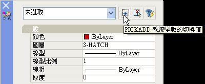

按工作列中的刪除~可以選取多個物件~然後按右鍵一次刪除~
後來也不知道動到什麼設定~
在刪除時~
按一次工具列的刪除~只能點選一個物件做刪除~
請問要怎麼調整設定~
才能像之前那樣可以一次刪除多個物件~
提供三個解決方法:
方法一:
1.請鍵入 OPTIONS指令 開啟 (「選項」對話方塊) → (「選取」標籤)。
2.將 (選取模式) → (使用 [Shift] 加入選取) 的勾選取消即可。

方法二:
1.請鍵入 [Ctrl]+1 快速鍵 開啟 (性質對話方塊)
2.將右上角第3個按鈕 ( PICKADD Sysyar的切換值) 由 [1] 切換回 [+] 即可。

方法三:
1.請鍵入 PICKADD系統變數。
2.輸入 PICKADD 的新值 <0>: 設定為 1 即可。
PS:建議可由 說明[F1] 鍵入關鍵字查詢相關說明及設定，例如你的問題是關於選取模式，就可在 說明[F1] 鍵入 "選取" 依照這個方法去搜尋,看看能否找到解決方法。